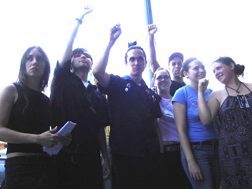

All workers in playgrounds and places of amusement and recreation. All professional entertainers.
Submitted on Sat, 09/09/2006 - 1:08am
 By Dean Dempsey - Bay Area GMB
By Dean Dempsey - Bay Area GMB
In the largest turnout to date, the Bay Area Industrial Workers of the World rallied outside Landmark’s Shattuck Cinemas in Berkeley, CA, in support of the theater’s workers. The rally occurred one day before the IWW General Assembly, allowing the opportunity for fellow workers from all parts of North America to participate, putting our number at about 125 Wobblies and union-supporters.
The rally began as a march, as over 60 Wobblies marched from the Bay Area GMB office, to the Shattuck Cinemas half a mile away. As we approached the theater, everyone began to sing “Solidarity Forever,” and then took a place outside the theater to display banners and picket signs.
Submitted on Sun, 09/03/2006 - 4:30am
 IWW Members from around the globe have travelled far and wide to attend the annual General Assembly of the Industrial Workers of the World, which is being hosted this year by the San Francisco General Membership Branch of the IWW in Oakland, California.
IWW Members from around the globe have travelled far and wide to attend the annual General Assembly of the Industrial Workers of the World, which is being hosted this year by the San Francisco General Membership Branch of the IWW in Oakland, California.
On Friday, September 1, 2006, hundreds of Wobblies rallied outside of the Shattuck Cinema Landmark Theater to stand in solidarity with the Shattuck Cinema workers who're negotiating their first union contract after winning their union election in the summer.
Pictured here are many of the attending IWW members, including Shattuck Cinema workers and Daniel Gross from New York City who was fired for organizing Starbucks Workers in New York City. The IWW has pledged to fight this illegal termination and continues to organize at Starbucks internationally. Coincidentally, a Starbucks is located next door to the Shattuck Cinema.
Submitted on Sat, 08/26/2006 - 3:03am
This year, the General Assembly of the Industrial Workers of the World will be hosted by the San Francisco Bay Area General Membership Branch at the Humanist Hall in Oakland, California, at 390 27th Street. On Friday Sept. 1st, the day before the Assembly is called to order, the IWW will be recieving Fellow Workers from throughout the Union at its headquarters in the Grassroots House in Berkeley at 2022 Blake St., just west of Shattuck.
At 6:30 pm on Friday the IWW is conducting a rally and march, in Solidarity with IWW-Shattuck Cinema Workers, starting from the theater (located near the Berkeley Downtown BART station) and proceeding at a mischieviously Wobbly trajectory. Songs will be sung, the truth shall be spoken, and the power of Working Class Solidarity will once again rise from the rank and file of the world's toughest and most directly democratic radical labor union and its allies.
Submitted on Sun, 08/13/2006 - 11:54am
By Riya Bhattacharjee - Berkeley Daily Planet, August 11, 2006Shattuck Cinema workers and union representatives met with management on Wednesday to negotiate pay raises, and other basic demands including uniforms and grievance procedures.
Landmark Cinemas, the parent company of Shattuck Cinemas, and the owner of 58 other theaters all over the United States, had frozen pay increases for workers for over a year, citing problems with funds.
In an e-mail to union representatives on Aug. 4, Landmark announced that the pay increase freeze was being removed and that they were readjusting wages to be competitive in the market. Harjit Gill of Industrial Workers of the World (IWW), the union for Shattuck Cinema workers, said that this was an effort to keep the workers from unionizing.
Submitted on Sat, 08/05/2006 - 2:16pm
Workers at Shattuck Cinemas in Berkeley and all Landmark Cinema employees nation wide are about to receive a pay increse. At Shattuck Cinemas in Berkeley the starting wage goes up to $8 per hour from $7.25. That's if the workers choose to accept it. Landmark attorney Tom Pavone sent a letter announcing the pay raises to the IWW along with spread sheet data showing the increase for each worker.
The IWW-Shattuckunion considers this to be a clear demonstration of union power and will continue to press the company for gains in benefits and improvments in working conditions. The IWW in the Bay Area along with union workers at Kendall Square cinema in Cambridge Mass., are the first two Landmark Cinemas to go union. There are approximately 60 Landmark theaters in total.